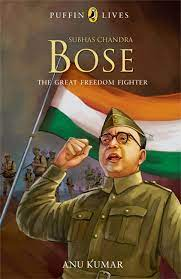
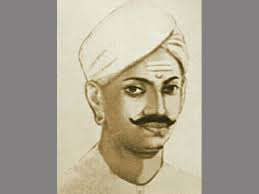
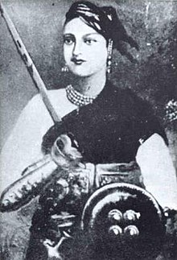
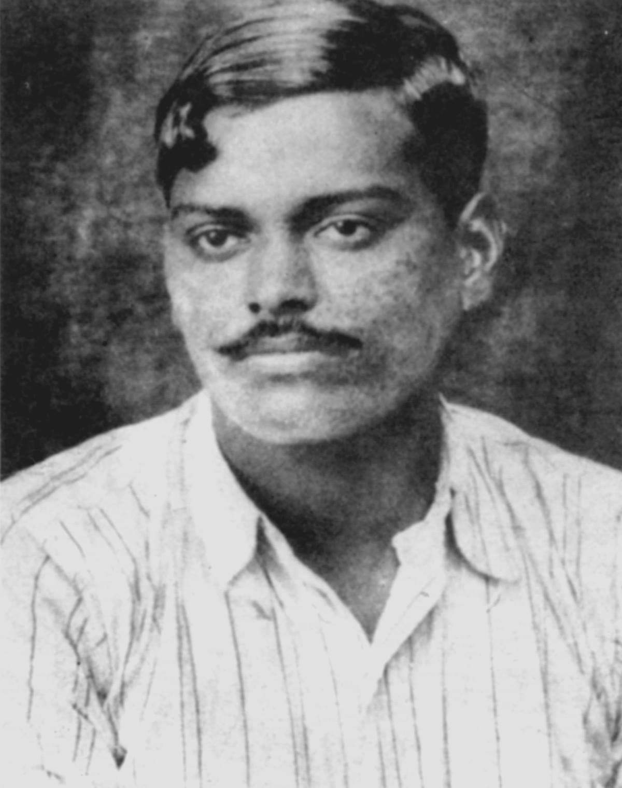

Bhagat Singh (27 September 1907[a] – 23 March 1931)
was a charismatic Indian revolutionary[6] who participated in the murder of a British police officer[7]\
in what was to be retaliation for the death of an Indian nationalist.[8] He later took part in a largely
symbolic bombing of the Central Legislative Assembly in Delhi and a hunger strike in jail, which—on the
back of sympathetic coverage in Indian-owned newspapers—turned him into a household name in the Punjab
region, and after his execution at age 23 into a martyr and folk hero in Northern India.[9] Borrowing
ideas from Bolshevism and anarchism,[10][11][12][13][14] he electrified a growing militancy in India
in the 1930s, and prompted urgent introspection within the Indian National Congress's nonviolent
but eventually successful campaign for India's independence.[15

Mohandas Karamchand Gandhi (/ˈɡɑːndi, ˈɡændi/;[3]
GAHN-dee; 2 October 1869 – 30 January 1948), commonly known as Mahatma Gandhi, was an Indian lawyer,
anti-colonial nationalist, and political ethicist who employed nonviolent resistance to lead the successful
campaign for India's independence from British rule and later inspire movements for civil rights and freedom
across the world. The honorific Mahātmā (Sanskrit: "great-souled", "venerable"), first applied to him in
1914 in South Africa, is now used throughout the world.
Born and raised in a Hindu family in coastal
Gujarat, Gandhi trained in the law at the Inner Temple, London, and was called to the bar at age 22 in June
1891. After two uncertain years in India, where he was unable to start a successful law practice, he moved
to South Africa in 1893 to represent an Indian merchant in a lawsuit. He went on to live in South Africa
for 21 years.The honorific Mahātmā (Sanskrit: "great-souled", "venerable"), first applied to him in
1914 in South Africa, is now used throughout the world.The honorific Mahātmā (Sanskrit: "great-souled", "venerable"),
first applied to him in 1914 in South Africa, is now used throughout the world.

Subhas Chandra Bose (/ʃʊbˈhɑːs ˈtʃʌndrə ˈboʊs/ (listen)
shuub-HAHSS CHUN-drə BOHSS;[12] 23 January 1897 – 18 August 1945[4][5]) was an Indian nationalist whose defiance
of British authority in India made him a hero among Indians,[h][i][j] but his wartime alliances with Nazi
Germany and Imperial Japan left a legacy vexed by authoritarianism,[16][k][l][m][n] anti-Semitism,[o][p][q][23]
and military failure.

Subhas Bose was born into wealth and privilege in
a large Bengali family in Orissa during the British Raj. The early recipient of an Anglocentric education,
he was sent after college to England to take the Indian Civil Service examination. He succeeded with
distinction in the vital first exam but demurred at taking the routine final exam, citing nationalism to be
a higher calling.

Mangal Pandey was an Indian soldier who played a key part
in the events immediately preceding the outbreak of the Indian rebellion of 1857.

Rani Lakshmibai, the Rani of Jhansi (pronunciation
(help·info); 19 November 1828 — 18 June 1858),[1][2] was an Indian queen. Ram Prasad Bismil, and three other
prominent party leaders, Roshan Singh, Rajendra Nath Lahiri and Ashfaqulla Khan.

Chandra Shekhar Tiwari (pronunciation (help·info)[2]
(23 July 1906 – 27 February 1931), popularly known as Chandra Shekhar Azad, was an Indian revolutionary
who reorganised the Hindustan Republican Association (HRA)